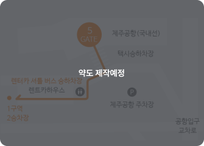
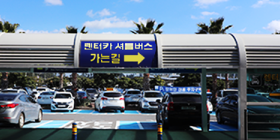
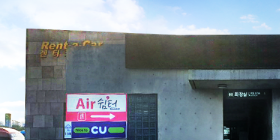
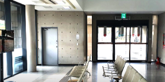
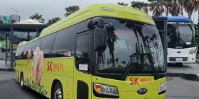

뒤로가기
지점안내
메뉴
단기렌터카
장기렌터카
제주
정비매장
셔틀버스 안내

STEP.01
공항 5번 Gate를 나오셔서 횡단보도를 건너세요.

STEP.02
횡단보도를 건너신 후 오른쪽 '렌터카 하우스'로 이동하세요.

STEP.03
렌터카 하우스 화장실 측 출입구를 통해 내부로 들어가세요

STEP.04
렌터카 하우스를 통과해 맞은편 출입구로 나가세요.

STEP.05
SK렌터카 셔틀버스를 타고 제주지점으로 이동하세요. 1구역 2승차장 (10~20분 간격)
STEP.06
제주지점 도착 후 차량을 수령하고 즐겁게 제주도를 여행하세요.
셔틀버스 운행안내
제주공항
첫차 07:28
막차 22:50
셔틀버스
10~20분 간격
배차 6분 소요
SK렌터카 제주지점
첫차 07:28
막차 22:50
배차 및 소요시간은 교통상황에 따라 변동 가능
셔틀버스 탑승 시 최소 출발 5분 전 탑승바랍니다.
셔틀버스 배차 및 소요시간은 교통 상황에 따라 변동될 수 있습니다. (성수기, 주말에는 교통 혼잡 발생)
일정에 차질이 없도록 반납 시 최소 비행기 출발 1시간 전 지점에 도착바랍니다.
셔틀버스 시간표
 배차 및 소요시간은 교통상황에 따라 변동 가능
배차 및 소요시간은 교통상황에 따라 변동 가능